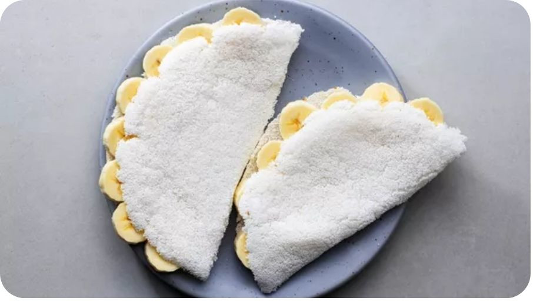

Tapioca ft. Cassava starch

Description
These crepe-like pancakes are made with cassava starch hydrated with water. They are cooked to order and stuffed with various sweet and savory fillings, such as cheese, butter, coconut, fruits, dry meat... any and all the fillings that you can think of!
Ingredients
- 1 cup cassava starch, more as needed
- 1/2 cup water, approximately
- 1/4 teaspoon salt
Steps
- Add the cassava starch to a medium bowl. Gradually add the water, 2 tablespoons at a time, stirring with your fingers as you go. The mixture will form clumps; use your finger to break them apart.
- Keep stirring and adding water until the entire mixture has formed medium-to-small clumps. You want the mixture to be on the dry side. Adding too much water will make a thick batter, but that's not what you want. If your mixture is too moist, add a little more starch until you find a good balance.
- Pass the moistened starch through a very fine sieve into a clean bowl. Use a wooden spoon to vigorously stir the starch in the sieve to help it pass through. Once sieved, add the salt, and stir again.
- Heat a nonstick pan over medium heat. Working quickly, evenly sprinkle the sifted starch into a thin layer until all the pan is covered. Using the back of a spoon, even out the crepe and allow it to cook for about 30 seconds, or until the crepe slides easily in the pan.
- Flip the crepe over with a spatula. Cook for an additional 30 to 40 seconds.
- Remove crepe to a plate. Wipe the skillet clean after each crepe and repeat the process until you've used all the mixture.
- Fill the crepe with your desired fillings (like sliced bananas on the image above). Fold it in half or roll it up. The crepes should be served warm because they will stiffen as they cool.
That is it, enjoy!
Source: check here.